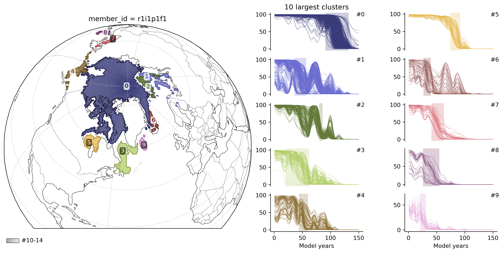

EDGE shift detection¶
This tutorial shows how to use EDGE as an alternative shift-detection method in TOAD. EDGE is a community contribution based on Bathiany et al. (2020) and Terpstra et al. (2025), implemented in TOAD by Sjoerd Terpstra. The TOAD implementation has not been peer-reviewed as part of the core TOAD methodology.
EDGE is a 1D edge-detection algorithm for abrupt shifts (Canny 1986; Bathiany et al. 2020; Terpstra et al. 2025):
Smooth the time series with a Gaussian filter.
Compute the gradient with the Sobel operator.
Thin candidate edges with non-maximum suppression.
Threshold the gradient to keep significant edges.
Score each edge by abruptness = segment-mean jump / pooled std.
Scores: sigma-normalised abruptness (not ASDETECT’s ~[-1, 1]). Cluster with shift_threshold=4 for the usual 4σ cut (not 0.5).
Needs variability: abruptness divides by segment spread — flat or near-constant series give little or no signal. NaN time series return zeros (cells with any NaN are skipped by compute_shifts).
import matplotlib.pyplot as plt
from toad import TOAD
plt.rcParams["figure.figsize"] = (12, 6)
plt.rcParams["figure.dpi"] = 300
Test data¶
We use the same CMIP6 case as the Arctic sea-ice demonstration in the TOAD paper (Sect. 3.4): March Northern Hemisphere sea-ice concentration (siconc) from E3SM-1-0 under the 1pctCO2 experiment (ensemble member r1i1p1f1, SImon, gr). This is the case highlighted by Terpstra et al. (2025) for abrupt winter sea-ice decline in E3SM-1-0.
The file in tutorials/test_data/ is a tutorial subset derived from the CMIP6 archive: March monthly values only, restricted to Northern Hemisphere latitudes (25.5–89.5°N), with model years 1–150 along the 1pctCO2 trajectory. It matches the raw preprocessing in the TOAD paper reproduction package (*_NH_march.nc) before optional Gaussian smoothing and masking applied there for the ASDETECT figure.
Data citation: Bader, D. C., Leung, R., Taylor, M., and McCoy, R. B.: E3SM-Project E3SM1.0 model output prepared for CMIP6 CMIP 1pctCO2, Version 20190718, Earth System Grid Federation, https://doi.org/10.22033/ESGF/CMIP6.4490, 2019.
Model reference: Golaz, J.-C., Caldwell, P. M., Van Roekel, L. P., and co-authors: The DOE E3SM coupled model version 1: Overview and evaluation at standard resolution, JAMES, https://doi.org/10.1029/2018MS001603, 2019.
Acknowledgement: We acknowledge the World Climate Research Programme, which, through its Working Group on Coupled Modelling, coordinated and promoted CMIP6. We thank the climate-modelling groups for producing and making available their model output, the Earth System Grid Federation for archiving the data and providing access, and the funding agencies who support CMIP6 and ESGF.
CMIP6 data are licensed under CC BY 4.0; see the CMIP6 terms of use.
td = TOAD(
"test_data/CMIP.E3SM-Project.E3SM-1-0.1pctCO2.SImon.gr_NH_march.nc",
log_level="DEBUG",
)
DEBUG: Logging level set to DEBUG
from toad.shifts import EDGE
edge_method = EDGE(
lmin=None, # min segment length for abruptness; default 10% of series length
lmax=None, # max segment length; default 20% of series length (set both or neither)
lcutoff=None, # timesteps skipped each side of edge; default 2% of series length
alpha=0.4, # down-weight pooled std when segment variances differ
smoothing_scale="auto", # Gaussian smooth before gradient: int timesteps, "auto", or None
gradient_threshold="relative", # edge candidacy: "relative" or absolute float
gradient_threshold_multiplier=0.5, # relative gradient cut = multiplier × max(|gradient|)
)
td.compute_shifts(method=edge_method)
DEBUG: Applying detector EDGE to siconc
INFO: New shifts variable siconc_dts: min/mean/max=-55.404/-0.094/4.504 using 7683 grid cells. Skipped 67.2% grid cells: 15717 NaN, 0 constant.
td.compute_clusters(shift_threshold=4)
DEBUG: Regridding siconc_dts with HealPixRegridder
DEBUG: HealPixRegridder: Automatically computed nside: 64 based on grid resolution 65x360
DEBUG: Applying clusterer HDBSCAN to siconc_dts with 5871 points
INFO: New cluster variable siconc_dts_cluster: Identified 15 clusters in 5,871 pts; Left 0.3% as noise (15 pts).
import cartopy.crs as ccrs
fig, ax = td.plot.overview(
ncols=2,
figsize=(12, 6),
cluster_ids=range(10),
map_style={"projection": ccrs.Orthographic(-50, 60)},
)
